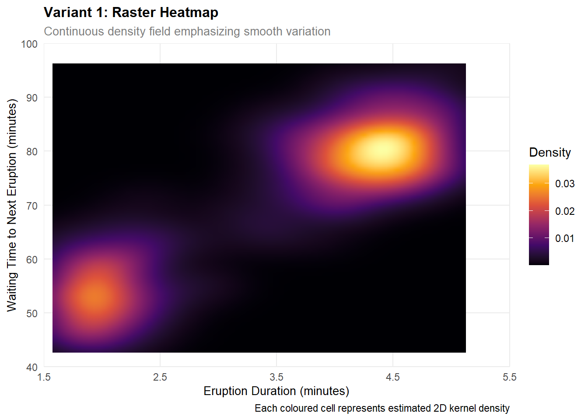
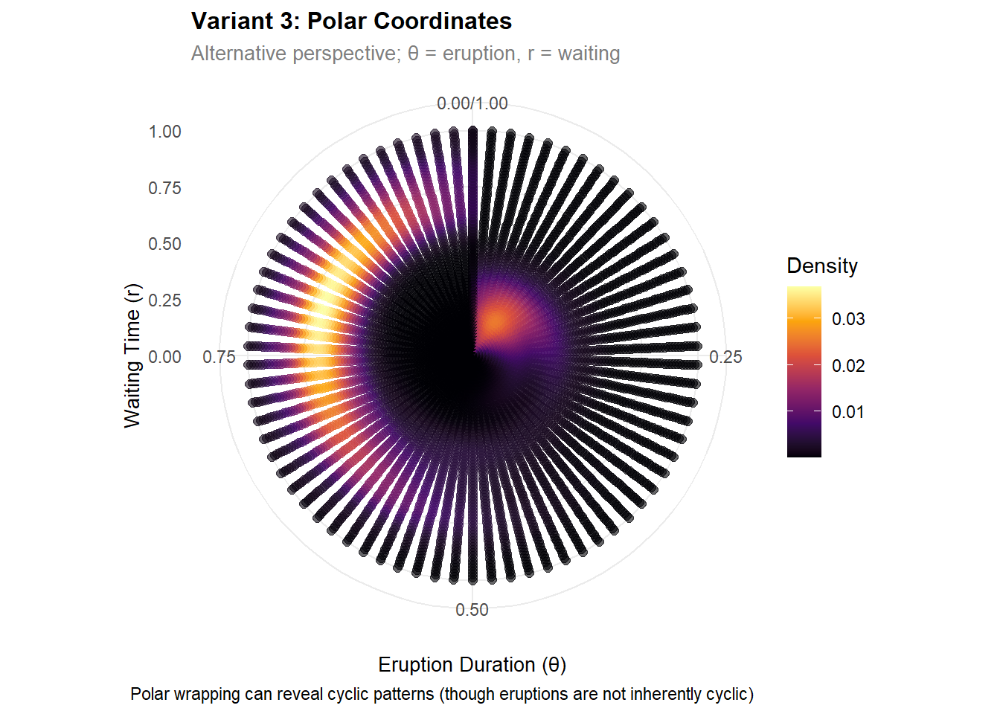
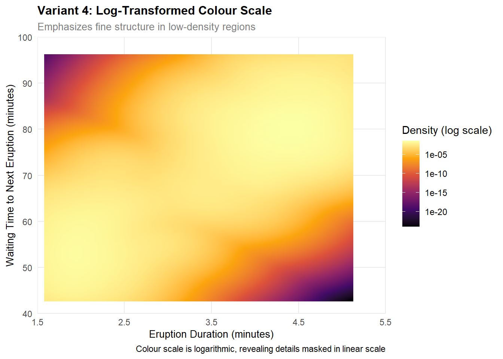
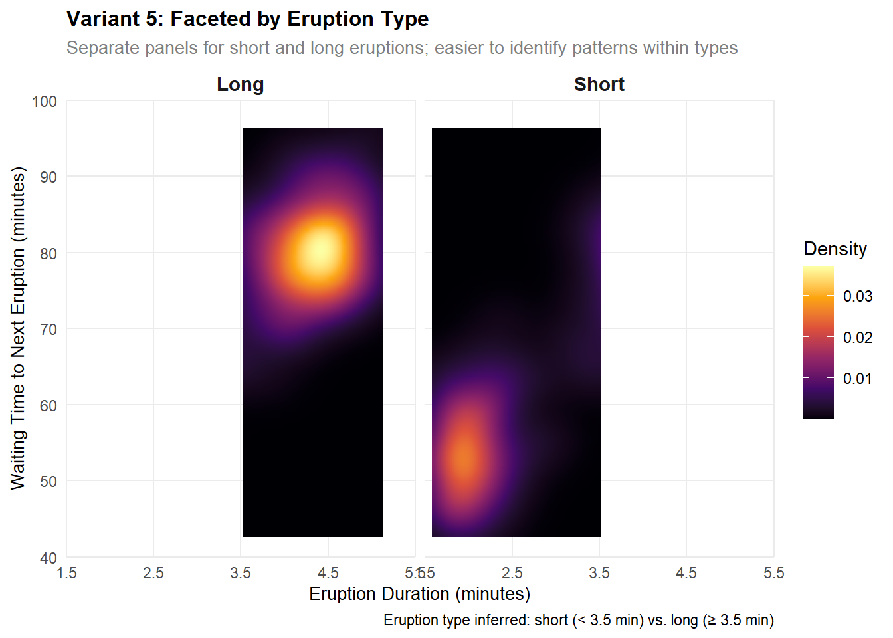

This task demonstrates the practical implementation of the Grammar of Graphics using ggplot2, creating multiple variants of the same dataset to show how different design choices—geometries, scales, and coordinate systems—alter visual perception and insight.
We work with the faithfuld dataset from ggplot2, which records 5,625 observations of the Old Faithful geyser in Yellowstone National Park. The data capture a remarkable phenomenon: bimodality. There are two distinct eruption types—short and long—each with its own waiting time distribution.
Our goal is to reveal this structure through thoughtful, layered design.
Variant 1: Raster Heatmap (Baseline)
Design Rationale
The raster (tile-based) representation is ideal for: - Showing fine-grained, continuous variation across a 2D space - Creating a smooth perceptual impression of density distribution - Emphasizing gradual transitions rather than discrete boundaries
A raster encodes density via fill colour, leveraging a perceptually uniform scale (Viridis) to ensure that colour differences accurately represent numerical differences.
Implementation
# Variant 1: Raster (smooth density field)plot1_raster <-ggplot( faithfuld,aes(x = eruptions, y = waiting, fill = density)) +geom_raster(interpolate =TRUE) +scale_fill_viridis_c(option ="inferno",name ="Density",breaks =pretty(faithfuld$density, n =5) ) +scale_x_continuous(name ="Eruption Duration (minutes)",breaks =seq(1.5, 5.5, 1),limits =c(1.5, 5.5) ) +scale_y_continuous(name ="Waiting Time to Next Eruption (minutes)",breaks =seq(40, 100, 10),limits =c(40, 100) ) +coord_cartesian(expand =FALSE) +labs(title ="Variant 1: Raster Heatmap",subtitle ="Continuous density field emphasizing smooth variation",caption ="Each coloured cell represents estimated 2D kernel density" ) +theme_minimal() +theme(panel.grid.minor =element_blank(),plot.title =element_text(face ="bold", size =12),plot.subtitle =element_text(size =10, colour ="grey50"),axis.title =element_text(size =10) )print(plot1_raster)

Grammar of Graphics Components
Component
Specification
Data
faithfuld (5,625 observations; x, y, fill)
Aesthetics
x = eruptions, y = waiting, fill = density
Geometry
geom_raster() – coloured tiles
Stat
stat_identity() (data plotted as-is)
Scale
Viridis (Inferno), perceptually uniform
Coordinates
Cartesian, no expansion
Guides
Title, axis labels, colour legend
Faceting
None
Interpretation
The raster reveals:
Bimodality: Two distinct ridges of density, corresponding to short eruptions (~2 min, waiting ~50 min) and long eruptions (~4.5 min, waiting ~80 min).
Anti-correlation: Short eruptions are followed by shorter waits; long eruptions by longer waits.
Smooth transitions: The Viridis scale shows gradual colour changes, appropriate for continuous data.
Variant 2: Contour Lines (Boundaries)
Design Rationale
Contour lines emphasize: - Discrete density levels (isobars) - Boundaries and discontinuities - Easier identification of peaks and ridges (useful for multimodal distributions)
Contours make it easier to identify the two eruption modes as distinct clusters.
Emphasizes modes: The contour lines clearly outline two distinct density peaks.
Improves readability: Discrete isobars make it easier to judge density thresholds.
Adds a layer: Combining raster and contours provides both the smooth background and the sharp boundaries.
Cognitive load: The dual aesthetics (fill + line colour) can be complex; use when the bimodal structure is the key message.
Variant 3: Polar Coordinates (Emphasis on Periodicity)
Design Rationale
While eruptions are not strictly cyclic, polar coordinates offer an alternative perspective: - Wrap the space to emphasize periodicity or cyclical structure - Change aspect ratio radically to reveal patterns not obvious in Cartesian view - Useful for cyclic variables (time of day, months, compass directions)
For this data, polar coordinates create a visually striking alternative, though not the most informative for this particular dataset.
Implementation
# Variant 3: Polar coordinates (alternative perspective)# Note: We rescale variables to fit within a reasonable radiusplot3_polar <-ggplot( faithfuld %>%mutate(# Normalize to 0-1 for polar plottingx_norm = (eruptions -min(eruptions)) / (max(eruptions) -min(eruptions)),y_norm = (waiting -min(waiting)) / (max(waiting) -min(waiting)) ),aes(x = x_norm, y = y_norm, colour = density)) +geom_point(size =2, alpha =0.6) +scale_colour_viridis_c(option ="inferno",name ="Density" ) +coord_polar(theta ="x",start =0,clip ="off" ) +scale_x_continuous(name ="Eruption Duration (θ)",limits =c(0, 1) ) +scale_y_continuous(name ="Waiting Time (r)",limits =c(0, 1) ) +labs(title ="Variant 3: Polar Coordinates",subtitle ="Alternative perspective; θ = eruption, r = waiting",caption ="Polar wrapping can reveal cyclic patterns (though eruptions are not inherently cyclic)" ) +theme_minimal() +theme(panel.grid.minor =element_blank(),plot.title =element_text(face ="bold", size =12),plot.subtitle =element_text(size =10, colour ="grey50"),axis.title =element_text(size =10) )print(plot3_polar)

Grammar of Graphics Components
Component
Specification
Data
faithfuld (with normalized variables)
Aesthetics
x = x_norm (eruptions), y = y_norm (waiting), colour = density
Geometry
geom_point()
Stat
stat_identity()
Scale
Viridis (colour); normalized x, y scales
Coordinates
coord_polar() – key difference
Guides
Title, axis labels, colour legend
Faceting
None
Interpretation
The polar variant:
Novelty: Provides an unusual visual impression; useful for engaging audiences.
Reduced effectiveness for this data: Polar coordinates are better suited to cyclic or angular variables; here they obscure rather than clarify.
Demonstrates principle: Shows how the same data can be radically transformed by changing the coordinate system—a key lesson of the Grammar of Graphics.
Variant 4: Transformed Colour Scale (Log-Density)
Design Rationale
The untransformed density scale often compresses low-density regions (making them hard to see) because a few high-density peaks dominate the colour range.
A log-transformed scale or other power transformation can: - Reveal fine detail in low-density regions - Reduce the perceptual dominance of density peaks - Facilitate simultaneous visibility of multiple modes
Implementation
# Variant 4: Log-transformed colour scaleplot4_logtrans <-ggplot( faithfuld,aes(x = eruptions, y = waiting, fill = density)) +geom_raster(interpolate =TRUE) +scale_fill_viridis_c(option ="inferno",name ="Density (log scale)",trans ="log10", # Log transformationbreaks = scales::trans_breaks("log10", function(x) 10^x)(c(min(faithfuld$density[faithfuld$density >0], na.rm =TRUE),max(faithfuld$density, na.rm =TRUE)) ) ) +scale_x_continuous(name ="Eruption Duration (minutes)",breaks =seq(1.5, 5.5, 1),limits =c(1.5, 5.5) ) +scale_y_continuous(name ="Waiting Time to Next Eruption (minutes)",breaks =seq(40, 100, 10),limits =c(40, 100) ) +coord_cartesian(expand =FALSE) +labs(title ="Variant 4: Log-Transformed Colour Scale",subtitle ="Emphasizes fine structure in low-density regions",caption ="Colour scale is logarithmic, revealing details masked in linear scale" ) +theme_minimal() +theme(panel.grid.minor =element_blank(),plot.title =element_text(face ="bold", size =12),plot.subtitle =element_text(size =10, colour ="grey50"),axis.title =element_text(size =10) )print(plot4_logtrans)

Grammar of Graphics Components
Component
Specification
Data
faithfuld
Aesthetics
x = eruptions, y = waiting, fill = density
Geometry
geom_raster()
Stat
stat_identity()
Scale
Viridis with trans = "log10" – key difference
Coordinates
Cartesian, no expansion
Guides
Title, axis labels, logarithmic colour legend
Faceting
None
Interpretation
The log-transformed variant:
Reveals detail: Low-density regions (e.g., the valley between the two modes) become visible.
Alters perception: What appeared as a sharp peak now shows smoother structure.
Trade-off: Easier to see low values, but harder to distinguish between high values.
Application: Useful for skewed distributions or when multiple scales are important.
Variant 5: Faceted by Inferred Eruption Type
Design Rationale
While the faithfuld dataset does not explicitly label eruption type, we can infer short vs. long eruptions and visualize each separately.
Faceting (small multiples) allows: - Side-by-side comparison of patterns within groups - Simplification by breaking complex data into digestible subsets - Direct comparison of distributions across groups
Implementation
# Create a categorical variable for eruption type (inferred from duration)faithfuld_faceted <- faithfuld %>%mutate(eruption_type =if_else(eruptions <3.5, "Short", "Long") )# Variant 5: Faceted viewplot5_faceted <-ggplot( faithfuld_faceted,aes(x = eruptions, y = waiting, fill = density)) +geom_raster(interpolate =TRUE) +scale_fill_viridis_c(option ="inferno",name ="Density" ) +facet_wrap(~eruption_type, nrow =1) +scale_x_continuous(name ="Eruption Duration (minutes)",breaks =seq(1.5, 5.5, 1),limits =c(1.5, 5.5) ) +scale_y_continuous(name ="Waiting Time to Next Eruption (minutes)",breaks =seq(40, 100, 10),limits =c(40, 100) ) +coord_cartesian(expand =FALSE) +labs(title ="Variant 5: Faceted by Eruption Type",subtitle ="Separate panels for short and long eruptions; easier to identify patterns within types",caption ="Eruption type inferred: short (< 3.5 min) vs. long (≥ 3.5 min)" ) +theme_minimal() +theme(panel.grid.minor =element_blank(),plot.title =element_text(face ="bold", size =12),plot.subtitle =element_text(size =10, colour ="grey50"),axis.title =element_text(size =10),strip.text =element_text(face ="bold", size =11) )print(plot5_faceted)

Grammar of Graphics Components
Component
Specification
Data
faithfuld with inferred eruption_type
Aesthetics
x = eruptions, y = waiting, fill = density
Geometry
geom_raster()
Stat
stat_identity()
Scale
Viridis; independent in each facet (optional)
Coordinates
Cartesian, no expansion
Guides
Title, axis labels, colour legend
Faceting
facet_wrap(~eruption_type) – key difference
Interpretation
The faceted variant:
Simplification: By separating the two modes, each facet focuses on a single distribution.
Direct comparison: The side-by-side layout makes it easy to compare characteristics.
Clarity: Reduces overplotting and makes patterns within each type more obvious.
Loss of context: The bimodal structure is no longer visible in a single view (trade-off).
Scales are not neutral: A linear colour scale compresses low values; a log scale expands them. Neither is “correct”—the choice depends on the message.
Coordinates affect interpretation: Cartesian coordinates are familiar and preserve angles; polar coordinates offer novelty but risk distortion.
Layering adds complexity: Combining raster + contours is powerful but demands more cognitive effort from the reader.
Faceting trades space for clarity: By breaking data into subsets, we simplify each panel but lose the holistic view.
Principles Demonstrated
All five variants instantiate the same Grammar of Graphics framework:
Start with data and aesthetic mappings
Choose geometry and statistical transformation
Apply scales appropriate to the message
Select coordinates thoughtfully
Add guides to orient the reader
Use faceting to manage complexity
By varying one or two components while holding others constant, we see how each component independently shapes visual perception—a fundamental insight of the Grammar of Graphics.
Conclusion and Next Steps
This task demonstrates that a single dataset can tell multiple stories depending on how it is visualised. In the next task, we extend these static visualisations into the temporal domain using animation, where a fourth dimension (time) is added to reveal patterns and changes across sequences of plots.